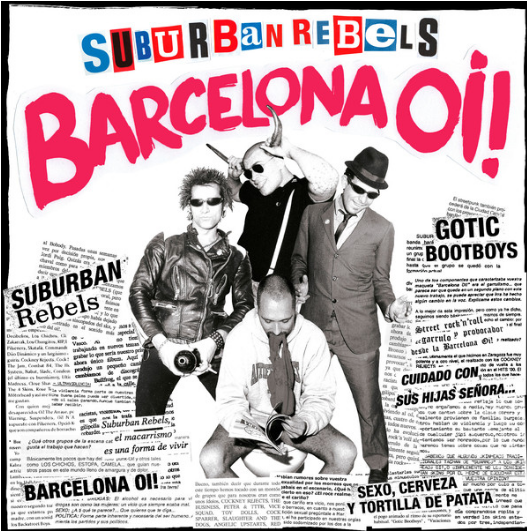
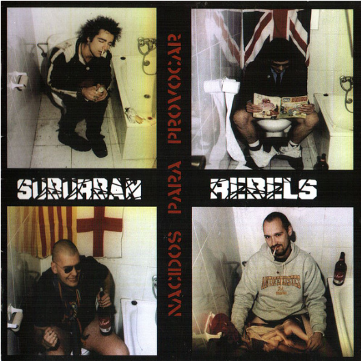
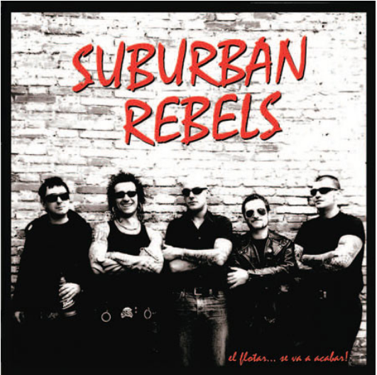
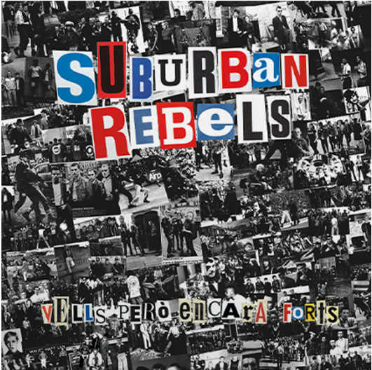

Suburban Rebels

Suburban Rebels es un grupo formado por 2 Skinheads, 1 Mod y un Punk en Barcelona en 1993. Es una de las bandas más relevantes de OI! en España. Tienen un sonido muy influenciado por grupos de Inglaterra como: The Cockney Rejects, The Last Resort y The 4 Skins. Su nombre viene de una de las canciones más famosas de otro de los grupos que los influenció, The Business. A lo largo del tiempo han tenido varios cambios en la formación de la banda. Parece que mantienen una postura apolítica, pero nunca se han pronunciado al respecto.
Discografía
1996 - Barcelona Oi!

01- Clase Obrera
02- Gótic Bootboys
03- The Last Cockney Kid
04- Barcelona Oi!
05- Clockwork Orange Boys
06- Los Grandes Cockney Rejects
07- Hoy como Ayer
08- Sexo, Cerveza y Tortillas de Patatas
2000 - Nacidos para Provocar

01- Soldados del Asfalto
02- Oi! Es Divertirse
03- Engañado
04- Un Día Gris
05- Nacidos para Provocar
06- Vacaciones en Hannover
07- La Vida es Dura
08- Street Punk
09- Futbol y Alcohol
10- Tacones y Pelucas
11- Es Ella
12- Clase Obrera
13- Skinhead
14- Gótic Bootboys
2008 - El Flotar... Se Va a Acabar!

01- Quintos
02- Morros y Rock n Roll
03- Fuera de Control
04- Buscando Emociones
05- El Odio
06- Jóvenes Brutales
07- Los Chicos Malos del Rock n Roll
08- Maldita Religión
09- Calles Peligrosas
10- Squillacci
11- Héroes de Barrio
2022 - Vells Però Encara Forts

01- Vells Però Encara Forts
02- Orgullo
03- Elegants i Arrogants
04- La Revolta (con Xavi)
05- Botellas
06- Des de L'Infern fins a l'Eternitat
07- Sang i Glòria
08- Nunca Dejes de Soñar
09- Juguem Fora
10- Mods, Skins, Punks
11- Ataca Ya!!
12- Skinhead Rock n Roll
13- Dies de Pluja